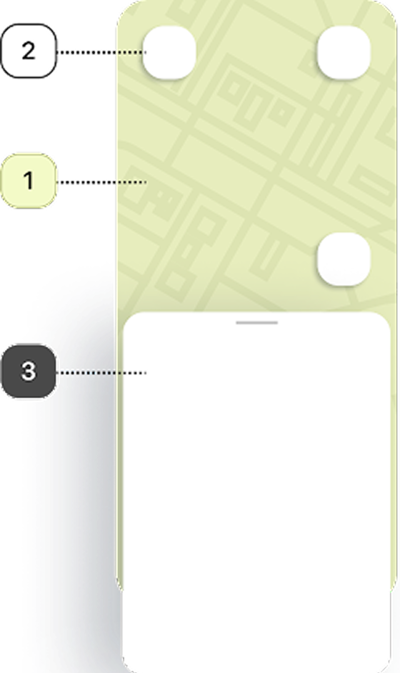
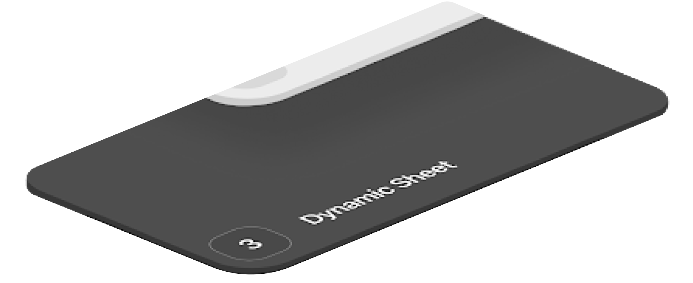
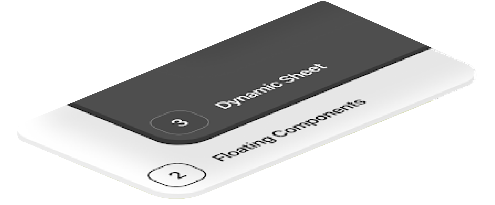
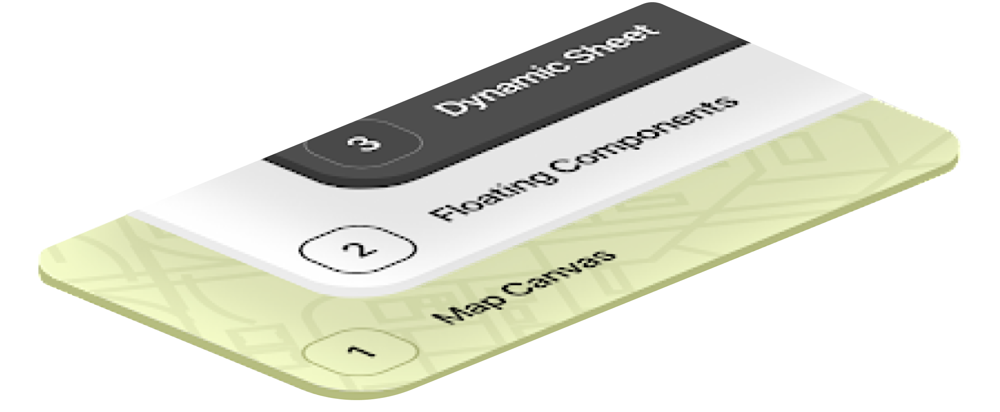
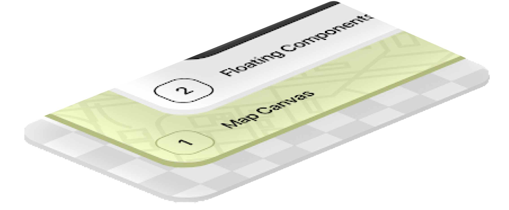

Managed a redesign of the information architecture for a global Rider app serving 20M+ customers across 50 countries — validated through A/B testing and released across 8 countries with a roadmap to 40 more.
role
Manager, Product Design
timeline
18 Months
context
Mobile Rider App
responsibilities
Design Team Management, Stakeholder Management, Design System Management, UX Research

the challenge
Delivery Hero is a Berlin-based, leading global local delivery platform operating in around 70 countries across 4 continents, specializing in food and ”quick commerce“. The Rider app information architecture is built based on system functions, and we know that Rider needs are variable based on their activity and working state. It means Riders have to switch between multiple screens to complete basic functions.
Our IA had three main challenges:
- Inefficient navigation requiring extra effort to reach important information and functions.
- UX anti-patterns causing redundancies that make the app harder to maintain and scale.
- Poor app discoverability resulting in confusion, frustration, and an unnecessarily high cognitive load.
our riders
Delivery Hero is present in 70 countries across 4 continents and is on a mission to deliver anything, straight to customers’ doors. A strong network of Riders is the beating heart of Delivery Hero’s business, making it possible to deliver to customers quickly and efficiently.
my role
As Manager, Product Design for the Rider Fundamentals domain including Experience, Availability, Access, and Wallet—I focused on helping define and improve the rider’s journey. The team was responsible for the mobile applications (iOS and Android) that provide solutions for riders, from onboarding to planning work hours and delivering orders to over 20M customers in 50 countries.
Special shoutout to Payam Shakibafar whose tireless work made this project possible long before I joined the team.
my role
- Built and managed a diverse team of product designers, UX researchers, and research ops specialists with a direct impact on the product strategy.
- Managed the design system that defined design patterns and standards across the product line.
- Lead the UX of product features from conception to launch in partnership with product, ops, and engineering.
- Cultivated healthy processes for the design and research team.
- Communicated product goals and connected related projects across the company.
scope & constraints
simple
Creating an initial implementation without adding new features.
intuitive
Ensuring that the map screen works well with no bottom navigation and that all menus/features are accessible for Riders in all possible states.
modular
Continuing a modular design of the app to allow us to apply local configurations without breaking the experience.
the proposal
For our new design we focused on the following sections:
-
the map
A visual support helping or encouraging a rider to accomplish the primary action.
-
the sticky button
Highlighting the primary action and making sure it is always easily accessible.
-
the bottom sheet
Which should always contain the action button for a Rider’s #1 objective given their current state.
-
[NOT SHOWN] bubble & nest
That offer easy access to key auxiliary information that may be helpful in accomplishing the Rider’s primary actions.
-
[NOT SHOWN] the side menu
Intended primarily for off shift actions as a way for Riders to dive deeper into relevant information.






the outcome
To evaluate the new map-centric design, we relied on A/B tests in multiple countries, starting in the EU. We closely monitored business KPIs including Rider Effective Delivery Time and Average Idle Time per Shift. We also monitored engagement KPIs like App Usability Score and App Store Rating. This allowed us to gain a deeper understanding through combining both qualitative and quantitative information.
By the end of 2023 we had released the new design on both Android and iOS in 8 countries (mostly EU), with a goal of releasing it to 40 more countries across the EU, MENA, APAC, and LATAM by the end of Q1, 2024.